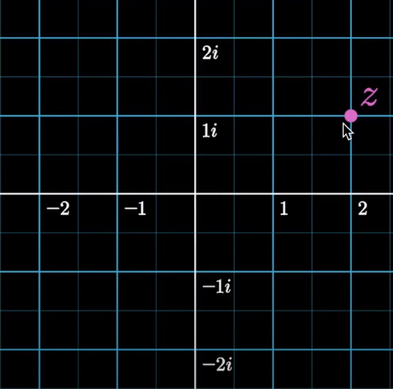
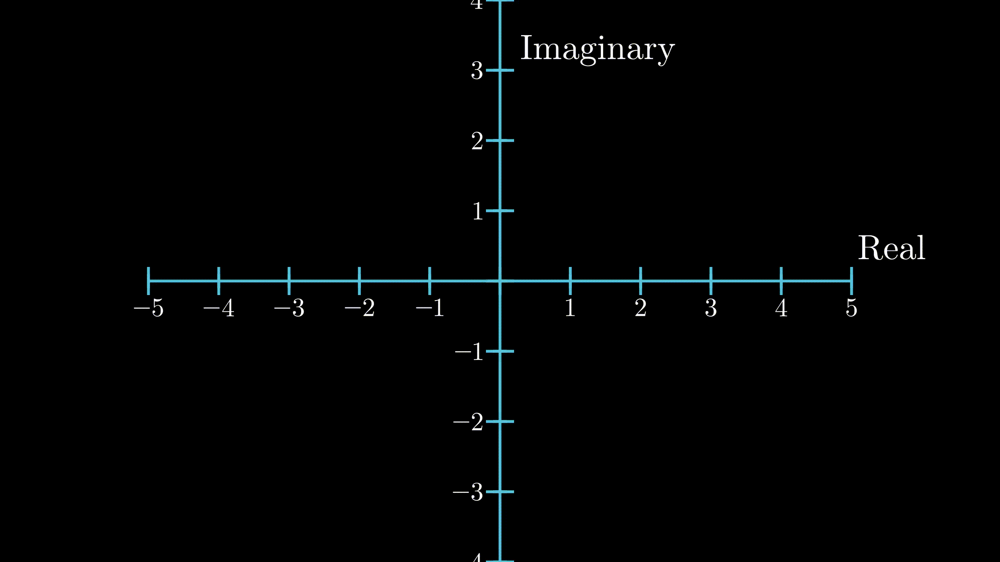
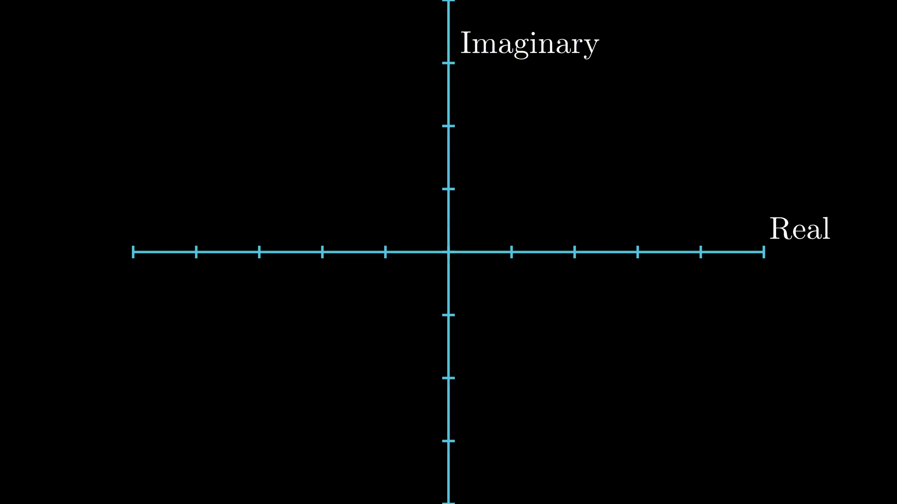
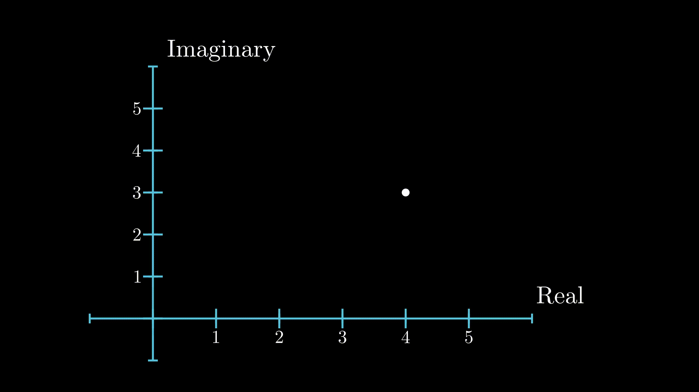
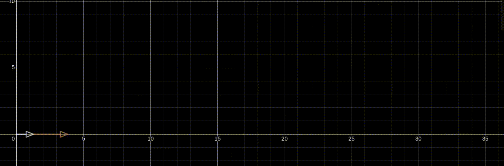
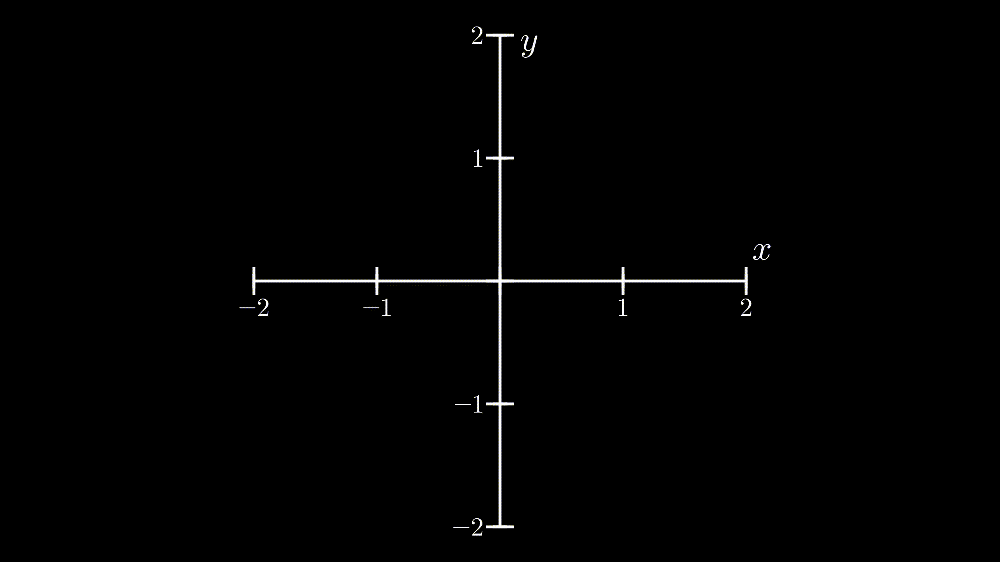
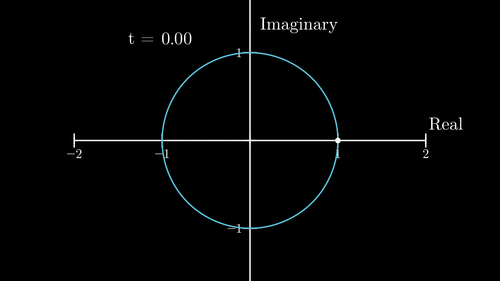
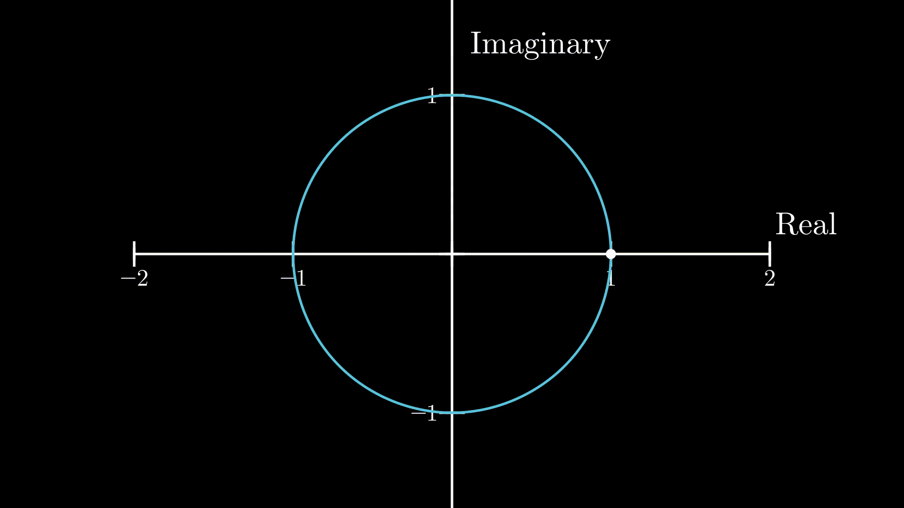

The Elegence of Complex Numbers
Table of Contents
Hey folks, today I want to write about a familiar topic in Higher mathematics, complex numbers, and in particular, the Euler's formula. Complex Numbers show up in a number of different fields, like signal processing, electromagetism, quantum mechanics and many more. Though it's a frequently occuring content, from what I've noticed, both the students and the experts are perplexed by complex numbers. For example, the beginners become puzzled by basic questions such as "What's the meaning of \(\sqrt{-1}\) ?" or "Does \(\sqrt{-1}\) even exist?" while even the experts don't understand the intuition behind simple formula like Euler's formula, and settle for the explanation provided by hairy equations like Taylor's expansion.
Introduction
Complex Numbers are extension to the real numbers. While it is possible to do maths without ever needing to touch complex numbers, we use them because they make our lives easier. You might have noticed that complex numbers show up almost all places where circular motion is directly or indirectly involved, for example, the analysis of simple harmonic motion or wave equations. This is not a coincidence, but rather a consequence of how complex numbers behave.
First, let's talk about imaginary numbers. The fundamental imaginary number is \(i\) which is defined to be \(\sqrt{-1}\). Notice the stress, it means that \(i\) is not a computed value. Let's derive a simple and useful property by extending this a step further.
\[ i = \sqrt{-1} \] \[ i^2 = -1 \]
Now, I want to introduce a little geometry. To include imaginary numbers, we need to extend our traditional real number line, as shown below. The obtained plane is called Complex Plane, or Argand Plane. The number \(i\) lies where the position \((0,1)\) would lie on an \(x-y\) plane. Any number which take the form \(x + iy\) is a complex number. The number \(x\) is called the real part while \(y\) is called the imaginary part of a complex number. Don't get carried away by the fact that the latter part is called 'imaginary', as you'll see in a while, it is every bit as real as any other numbers you can think of. In the diagram below, the number \(z\) can be written as \(z = 2 + 1i\)

Figure 1: Position of a complex number in complex plane
Mathematical Operations
Common operations like addition, subtraction, multiplication apply to complex numbers as well. Adding two complex numbers is fairly simple, you put the tail of the second complex number on the head of the first one, and see where the resulting head of two lands. Subtraction is easy as well. Subtracting a complex number \(z = x_1 + iy_1\) from another complex number \(w = x_2 + iy_2\) involves flipping the latter one and adding them. As it can be seen, this is like vector addition and subtraction, so to perform these two operations, you'd operate on real and imaginary part independently and combine the result.

Figure 2: Addition of two complex numbers is just like addition of vectors
Multiplication
Here's where things get interesting, because if you try to interpolate the analogy between complex numbers and vectors we've been making so far, multiplication cannot be done as we did with vectors as vectors only have dot or cross products defined for them, whereas, an imaginary number, being \(\sqrt{-1}\) follow rules of scalar multiplication. Strictly speaking,
\[ a \times i = ai \]
for any real number \(a\).
Notice here, this is just like algebraic multiplication where you multiply a variable by a number, but, it's even more than that. Notice, on the complex plane, multiplying by \(i\) rotates the point by \(90^{\circ}\) anticlockwise. This is a valuable observation which we will make use of very often. If we start thinking multiplication by \(i\) as \(90^{\circ}\) rotation in counterclockwise direction, we can keep consistency between our observation and the fact that \(i^2 = -1\) because that would essentially mean \(1 \times i \times i\) which, in our context, means a \(180^{\circ}\) rotation, which lands at \(-1\). Now we can think multiplication by \(n^{th}\) power of \(i\) as \(90 \times n\) degrees rotation in anticlockwise direction.

Figure 3: Multiplication by \(i\) rotates the point in complex plane by \(90^{\circ}\) anticlockwise
Magnitude of a complex number
Just like real numbers, the magnitude of a complex number is defined to be it's distance from the origin. Since, it is a distance, the magnitude is always a real number. If \(z = x + iy\), the magnitude of z is denoted as \(\lVert z \rVert\) and is given as
\[ \lVert z \rVert = \sqrt{x^2 + y^2} \]

Figure 4: Magnitude of Complex Number
Rotation by a certain angle \(\theta\)
So far we've looked at how multiplying a real number by \(i\) rotates the original number by \(90\) degrees, or \(\frac{\pi}{2}\) radians. Now, I want to look at a more general case. For this, I ask a question, "By which complex number should I multiply \(1\) to produce a \(\theta\) radians rotation in counterclockwise direction?". You can work that out for yourself if you feel like it. The answer to this question is really simple, if we apply the transformation of rotating by \(\theta\) radians to unity, i.e. \(1\), the real component of resulting complex number would be precisely \(cos({\theta})\) and imaginary component \(sin({\theta})\) for it to maintain its trajectory on the unit circle. So, the complex number that produces a rotation in anticlockwise direction to any complex number by \(\theta\) radians would be
\[ Z_{\theta} = cos({\theta}) + i sin({\theta}) \]
The celebrity formula: \(e^{i\pi} = -1\)
The first thing that intrigues anybody who is seeing this formula is how does that even make sense. From the perspective of someone who is learning this formula for the first time, \(e\) just means a real number that is about \(2.71\), \(\pi\) is another real number approximately \(3.14\) and \(i\) as usual, is \(\sqrt{-1}\). Terms like \(2^5\) or \(10^6\) makes sense as they mean something. For example, \(a^b\) means \(b\) repeated multiplications of \(a\). But expressions like \(e^\pi\) cannot be explained in that way, because what would \(\pi\) repeated multiplications even mean? And on top of that, when we start talking about expressions like \(e^{i\pi}\), the level of complexity rises exponentially(no pun intended). This explanation cannot suffice to provide us with meaningful explanation.
The key to understanding this is viewing this from a different perspective. Consider a function \(f(x)\) defined as:
\[ f(x) = 1 + \frac{x}{1!} + \frac{x^2}{2!} + \frac{x^3}{3!} + ... \]
Once again, this is a definition of \(f(x)\), we don't question its origin, or what would it would evaluate to. We could have chosen any other function for \(f(x)\), but we'll see in a while why this particular function is so special.
Now, let's start evaluating the values of \(f(x)\) for different values of \(x\). Since we cannot compute the sum of infinite number of terms, we approximate the value of \(f(x)\) by including only a few terms from beginning as the terms further away from beginning would be really small. Plugging in a few different values, we notice,
\[ f(1) = 1 + \frac{1}{1} + \frac{1}{2} + \frac{1}{6} + ... \approx 2.71828 = e \] \[ f(2) = 1 + \frac{2}{1} + \frac{4}{2} + \frac{8}{6} + ... \approx 7.38906 = e^2 \] \[ f(3) = 1 + \frac{3}{1} + \frac{9}{2} + \frac{27}{6} + ... \approx 20.08554 = e^3 \]
Since, the function \(f(x)\) satisfies the relation that \(f(x) = e^x\) for real numbers, scientists and mathematicians started using \(e^x\) as the shorhand symbol for the function \(f(x)\) because writing \(e^x\) is much easier than writing \(3\) or \(4\) terms of \(f(x)\). And the function's name is not \(f(x)\), rather it's \(exp(x)\). So, \(e^z\) is not \(e\) raised to the power \(z\), but rather syntactic sugar for this long function \(f(z)\). That's why, we should tend to think of \(e^{i\pi}\) not as \(i\pi\) repeated multiplications of \(e\), rather the function \(f(x)\) evaluated at \(\pi\).
Revision of High School Physics
Mechanics
We shall take a little detour and revisit the high school physics class. This will be another piece which we'll need to understand the Euler's formula. Let's consider the position of a body, which is a function of time, described by following equation:
\[ x(t) = e^{2t} \qquad \{t \ge 0\} \]
Now, let's compute the body's velocity
\[ \frac {dx(t)} {dt} = \frac{d}{dt}e^{2t} = 2e^{2t} \qquad \{t \ge 0\} \]
This motion can be described as follows. The body starts out at \(1\) on the number line, because \(x(0) = e^0 = 1\). At a certain time, \(t\), the body will be at a distance of \(e^{2t}\) distance from the origin, and the magnitude of its velocity at that instant will be \(2e^{2t}\), i.e, the magnitude of its velocity will be twice as much as its distance from origin. The further away the body is from the origin, the greater its velocity would be. We can draw the position vector and the velocity vector of the body to see if it's really true (Spoiler alert, it's true).

Figure 5: Exponential motion: White vector is the body's position vector, and brown one is its velocity vector
Circular Motion
Another topic in physics that I want to touch here is circular motion. Again, you might remember from the high school that whenever a body is moving in a circle in a 2 dimensional space, it's velocity vector is always perpendicular to its position vector.

Figure 6: Circular Motion: Notice that the velocity vector is perpendicular to its position vector (vector from origin to the body)
Those who already know why this is true can skip to the next section. For the rest of you, here's a little calculus explaining this. Let \(\vec{r}\) be the position vector of a body and \(\vec{v}\) be its velocity vector. If \(\vec{r}\) and \(\vec{v}\) are orthogonal, then the explanation follows as:
\[ \implies \vec{r} \cdot \frac{d\vec{r}}{dt} = 0 \] \[ \implies \frac{d}{dt}(\vec{r} \cdot \vec{r}) = 0 \] \[ \implies \vec{r} \cdot \vec{r} = c^2 \] \[ \implies r^2 = c^2 \] \[ \implies \lVert r \rVert = c \]
We can see that the magnitude of it's position vector remains constant, i.e., the body is at a constant distance from the origin. This clearly suggests that the body is travelling in a circle centered at origin.
Putting it all together
Now, I will introduce complex numbers to the scenario. Previously, our body moved with an exponential motion on the real number line. This time, we define the position of the body described as
\[ r(t) = e^{it} \quad \dotso (1) \]
Since our calculation involves complex numbers, we should use complex plane to show the position and velocity of the body. Notice that in the beginning, or at \(t = 0\), the body is at \(1 + 0i\). Now, the velocity of the body would be
\[ v(t) = i e^{it} \] \[ v(t) = i \cdot r(t) \]
From above, we know that multiplication by \(i\) produces an effect of \(90^{\circ}\) counterclockwise rotation. We can now say that the complex number which describes the velocity of the body will be perpendicular to the complex number which describes the position of the body, because the velocity is \(i\) times the position of the body. And, as described in the previous section, the body moves in a circular motion. So, the body will move in the unit circle anticlockwise. But the question still remains, how we can know for sure that it will land on \(-1\) given that \(t = \pi\). We need a little math for that.
Notice that the magnitude of the velocity is given as
\[ \lVert v(t) \rVert = \lVert i \rVert \cdot \lVert r(t) \rVert = 1 \cdot 1 = 1 \]
So, we can say that it moves with a uniform speed of 1 unit along the circumference of the circle.
Now, at \(t = \pi\), the distance covered by the body would be
\[ s = \lVert v \rVert \cdot t = 1 \cdot \pi = \pi \]
This is exactly half of the circumference of the unit circle in the complex plane, and as our body started out at \(1 + 0i\), the position of our body at \(t=\pi\) would be exactly at \(-1 + 0i\) or \(-1\), because it travelled \(\pi\) distance along the circumference in the anticlockwise direction. So,
\[ r(\pi) = e^{i\pi} = -1 \]

Figure 7: Physical interpretation behind Euler's formula
Now let's extend this a step further. Since the body has a unit speed, at time \(t\), it would have travelled a distance of \(t \times 1 = t\), i.e. covered an arc length of \(t\) units.
We know from middle school mathematics that
\[ \theta = \frac {arc length}{radius} = \frac{t}{1} = t \]
So, at time \(t\), the angle sweeped out by the body would be \(t\) radians. At that specific instant, the \(x\) component of the position of the body would be \(cos(t)\), and the \(y\) component would be \(sin(t)\). This can be calculated by simple trigonometry. Since the \(x\) component is the real part of the complex number, and \(y\) component the imaginary part, the resulting position of the body at any given time \(t\), is given by
\[ r(t) = e^{it} = cos(t) + isin(t) \]

Figure 8: General case of the Euler's formula
And that is general form of the Euler's formula. It amazes me how such terrifying looking formulae have such a nice interpretation. As it can be seen, that it's not a coincidence that complex numbers tend to show up in places like electromagetism, simple harmonic motion, quantum mechanics, or any place where circular or periodic motion is a key part. The properties of complex numbers exactly resembles that of periodic motion. That's what makes them an effective tool in studying these topics.
It stuns me, how centuries ago, mathematicians came up with these ideas, which have such an elegence hidden in them. The beauty of Mathematics lies in the fact that you don't have to take anybody's saying as a fact, but rather work things out and see if it's true yourself. As someone once said
The purpose of Mathematics is insight, not numbers.